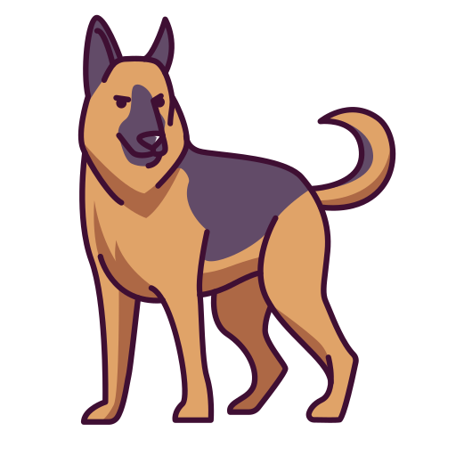
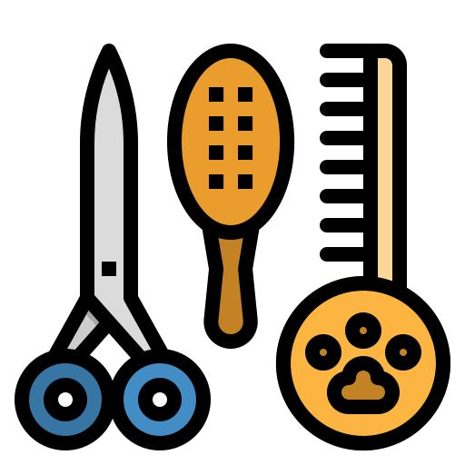

Owczarek niemiecki to bardzo popularny pies, niezwykle inteligentny, energiczny, posłuszny, bardzo odważny, mocno przywiązany do opiekuna. Jest nie tylko znakomitym kompanem do towarzystwa, ale i korzysta się z jego pomocy w terapii, policji czy ochronie. Wykazuje zazwyczaj łagodność i cierpliwość wobec dzieci. Bardzo lubi bawić się i aktywnie spędzać czas na dworze. Średnia długość życia owczarków niemieckich wynosi 10–13 lat. Występuje w odmianie długo- i krótkowłosej.

Owczarek niemiecki odpowiednio socjalizowany i trenowany ma spokojne usposobienie. Warto rozpocząć jego szkolenie już od szczeniaka. Jego inteligencja i spostrzegawczość wpływają pozytywnie na szybkość uczenia się. Pies chętnie bierze udział w treningach i dobrze współpracuje. Owczarek niemiecki odpowiednio przygotowany może zostawać sam w domu. Pamiętać trzeba jednak, że to żywiołowy pies i jeśli nie spożytkuje się odpowiednio jego energii, to istnieje spore ryzyko dokonywania zniszczeń, kiedy będzie przebywał sam.

Owczarek niemiecki nie potrzebuje wymagających zabiegów pielęgnacyjnych. Ograniczają się one głównie do okresowych kąpieli, kontrolowania czystość uszu oraz ewentualnego usuwania kamienia nazębnego i skracania pazurów. Dodatkowo wskazane jest czesanie, szczególnie u odmiany długowłosej – dwa, trzy razy na tydzień, a u krótkowłosych głównie podczas linienia. Najczęstsze choroby to dysplazja stawów biodrowych lub łokciowych oraz zapalenie uszu, spojówek i skręt żołądka.